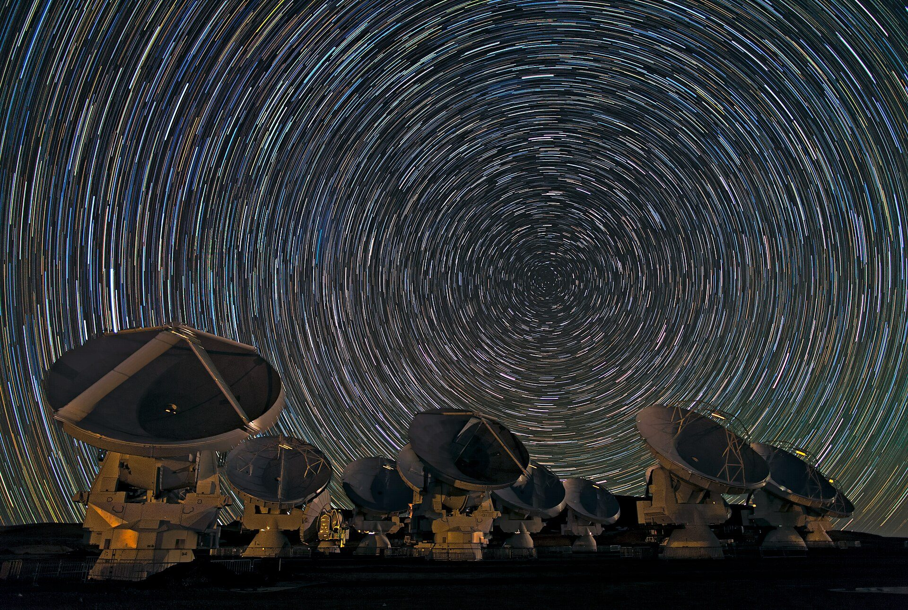

Application de chat d'entreprise souveraine
Conception d'une messagerie interne hébergée localement, alternative à Slack/Teams, avec accès protégé en profondeur, chiffrement des échanges, sauvegardes et plans de continuité.

Je suis CHANE-YIN Hugues, un passionné de Réseaux et Télécommunications. J'aime créer, apprendre et relever de nouveaux défis. Découvrez mes compétences, mes projets et mon parcours professionnel.
Découvrir mes projetsÉtudiant en 3e année · BUT Réseaux & Télécommunications
Je cherche un emploi dans les Réseaux et Télécommunications.
Conception d'une messagerie interne hébergée localement, alternative à Slack/Teams, avec accès protégé en profondeur, chiffrement des échanges, sauvegardes et plans de continuité.
Projet de sensibilisation aux bonnes pratiques de cybersécurité (protection des données, phishing, mots de passe, malwares, etc.).
Configuration d'une Raspberry Pi avec administration distante via SSH, contrôle d'une LED, collecte et transmission de données de capteurs.
HTML/CSS, Python, SQL, TCP/IP, Linux
PIX, MOOC ANSSI, Fresque du numérique
Sérieux, Esprit d'équipe, Savoir-être
Mairie de Saint-Pierre
IUT de La Réunion
Lycée de Trois Bassins
Photos : accueil, ESO/B. Tafreshi (twanight.org), CC BY 4.0 ; serveurs, Victorgrigas, CC BY-SA 3.0 ; fibre optique, Hustvedt, CC BY-SA 3.0